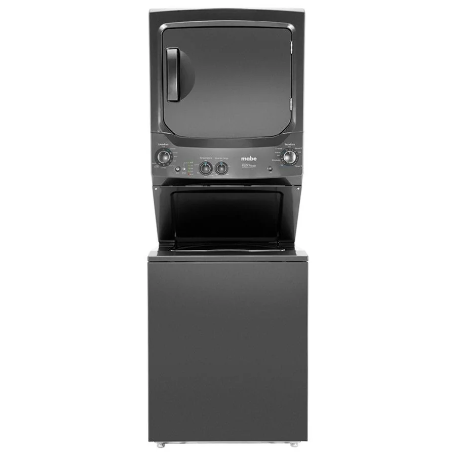

Imágenes de referencia de equipos Mabe.
Qué suele estar pasando
Mangueras flojas, filtro de desagüe mal cerrado o tina con fisura.
Nivel de atención: Urgente
Qué puedes revisar tú
Cierra la llave y desconecta mientras llega el técnico.
Cierra la llave de agua y desconecta la torre antes de revisar filtros, mangueras o el ducto. Si huele a quemado, desenchúfala.
Cuándo llamar al técnico
No lo dejes pasar: este tipo de falla puede dañar el equipo, causar una fuga o representar un riesgo. Deja de usarlo, sigue las indicaciones de seguridad y escríbenos para coordinar la revisión.
Qué hacemos en la visita
- Probamos el equipo y reproducimos la falla
- Identificamos la pieza o el sistema que la causa
- Te explicamos el diagnóstico y el costo antes de reparar
- Reparamos y probamos que quede funcionando
Datos que nos ayudan por WhatsApp
Envíanos marca y modelo (la etiqueta suele estar atrás o en el borde de la tapa), cuál de los dos equipos falla y el código de error si lo hay. Si la falla hace ruido, huele o muestra un código, grábala en un video corto.
Particularidades de Quito
En apartamentos de Quito las torres suelen ir en espacios reducidos: deja siempre un espacio mínimo para ventilación y revisa que el ducto no quede doblado.
Otras fallas de centro de lavado Mabe
Preguntas frecuentes
¿Puedo seguir usando el centro de lavado Mabe mientras tanto?
No lo recomendamos hasta revisarlo.
¿El técnico lo repara en mi casa en Quito?
Sí. Vamos a tu domicilio, diagnosticamos la falla y te damos el costo antes de reparar. Escríbenos por WhatsApp para coordinar.
¿Qué debo enviarte para que me orientes?
Marca y modelo, una descripción de la falla, tu barrio y, si puedes, una foto de la etiqueta y un video corto del problema.